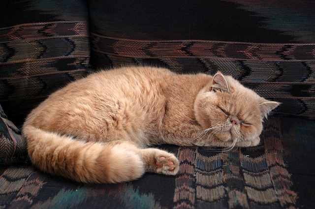
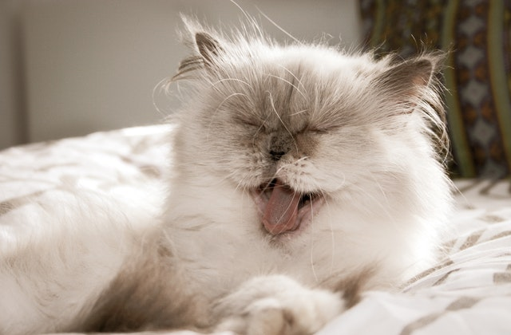
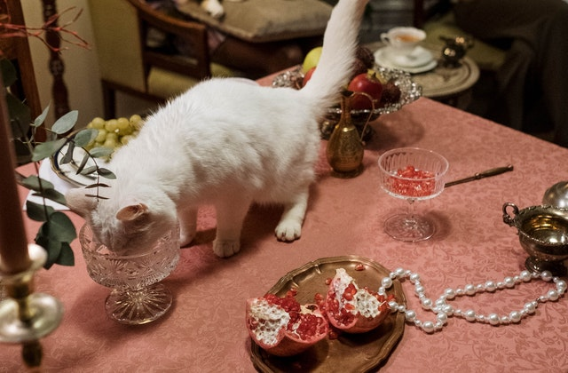
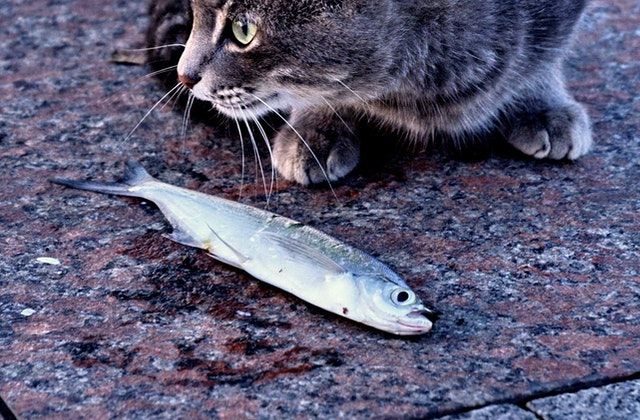

Persian cats are medium-sized, usually weigh between seven and 12 pounds, and measure from 10-15 inches tall. They have a rounded head, small, rounded ears, and big eyes. ... These long-haired cats can come in a multitude of patterns and colors, including white, black, blue, cream, chocolate, and red
 As with many breeds of cats, the Persian cat can eat numerous types of homemade cat food meals. It is imperative that they consume protein as this ancient breed would eat its prey. They are able to eat chicken, turkey, fish, and other types of seafood. There is no need to create a specific homemade cat food recipe for your Persian cat as they love eating protein they way you do. They enjoy different flavors and not repeating the same meal over and over again. This is also a good opportunity to feed it wet food, which is what they generally prefer to consume and what they tend to eat the most.
  for more info visit my facebook